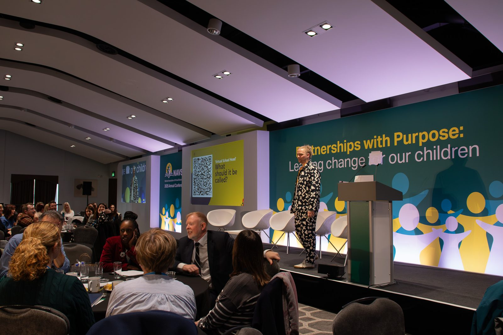
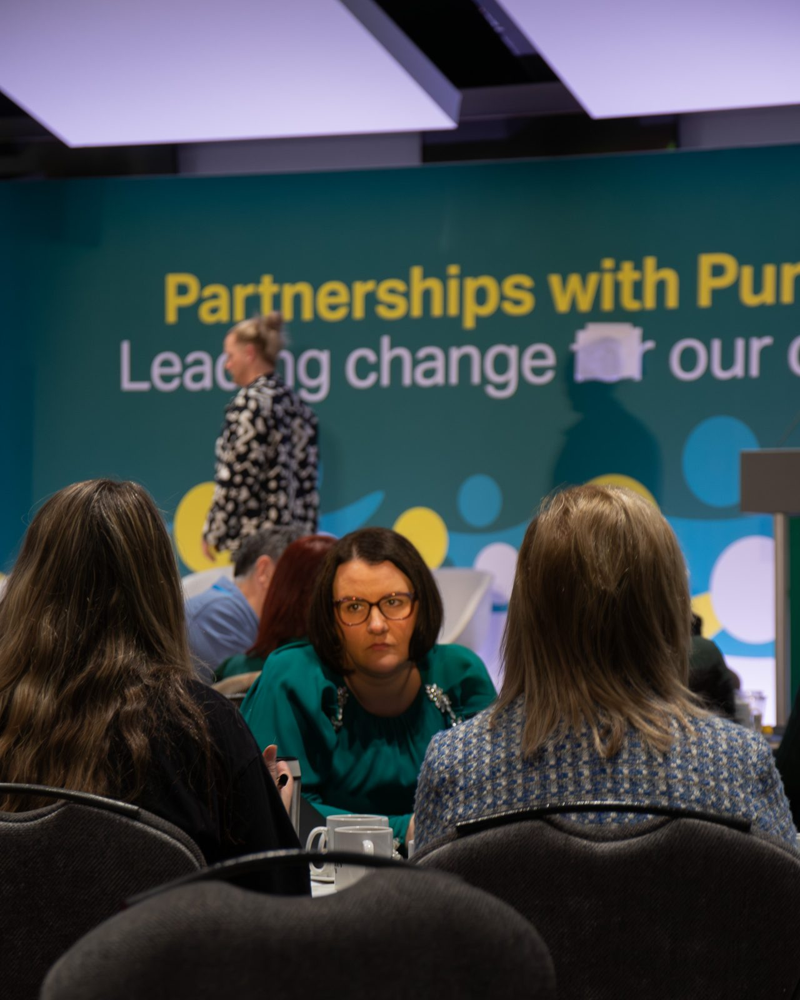

n
nNAVSH: a co-design workshop with Virtual School Heads
At the NAVSH annual conference in March 2025 we ran a workshop on co-design with around 200 Virtual School Heads and their teams. As the activity, the room explored a question close to home: what if the Virtual School Head role had a different title? It was an academic exercise in co-design, using a real question so everyone could feel the method working.

The starting point
NAVSH wanted its members to experience co-design for themselves, not just hear about it. We needed a question everyone in the room had a view on, so we used one from their own working lives: the title of the Virtual School Head role, created to improve the education of children in care and now covering many more children. It was a live, real-world exercise in how co-design works, rather than a review of the role.
What the room said
Delegates were quick to get to the heart of it. Many said they spend time explaining what a “virtual” school is, and that “Head” was the word schools understand best. That kind of insight is exactly what co-design is for: the people who do the work know where the friction is.
“Everyone thinks we run a digital school.”
What we did
- WorkshopCo-design in the roomAround 200 delegates worked in groups at the NAVSH annual conference, March 2025
- IdeasTake the question apartGroups generated new titles together and gave us 73 ideas before they left
- CriteriaTest ideas fairlySeven questions any idea had to answer, from clarity to longevity
- SurveyWiden the conversationA four-week follow-up survey gathered 62 detailed responses
How we worked
Start in the room: the first ideas came from around 200 people who do the job, not from us. Test ideas fairly: every idea was weighed against the same seven criteria. Show the working: we fed back what people said and how the ideas compared, so everyone could see how their voice shaped the thinking.
What people took away
Co-design, experienced first-hand by around 200 Virtual School Heads.
Delegates left with a method they can use in their own services: start with the people who do the work, test ideas against clear criteria, and show the working.
See the work
Open any piece to look through it page by page.
Seven questions
Every idea was weighed against the same seven questions. Choose a number.
The seven criteria
Does it say what the role does?
Does it reflect the full scope of the job?
Does it cover every child the role serves?
Does it carry the seniority of the role?
Would schools, social workers and families understand it straight away?
Will it still fit if the role keeps growing?
Is it short enough to say and remember?




One question
What should the Virtual School Head be called?
Every delegate was asked it at the end of the workshop. 73 answered.
Four families of ideas
- Strategic Titles that signal leadership across a system
- Education and care Titles that bring education and social care together
- Values-led Titles that lead with what the role stands for
- Integration Titles about joining services up
Generated in groups during the workshop, as part of the co-design exercise.
The word that causes the trouble
“Everyone thinks we run a digital school.”
54% criticised “Virtual”. It confuses schools, families and even inspectors, and the pandemic made it worse.
The word worth keeping
“Head”
54% valued it, because schools understand it and it signals seniority.